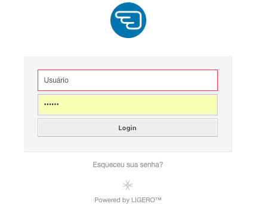
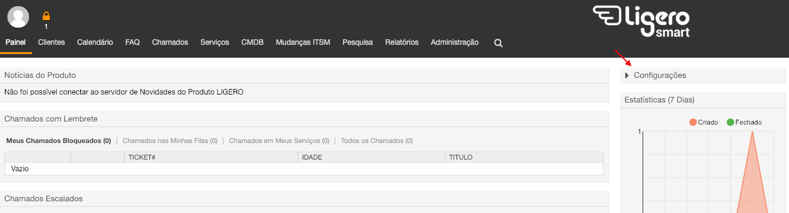
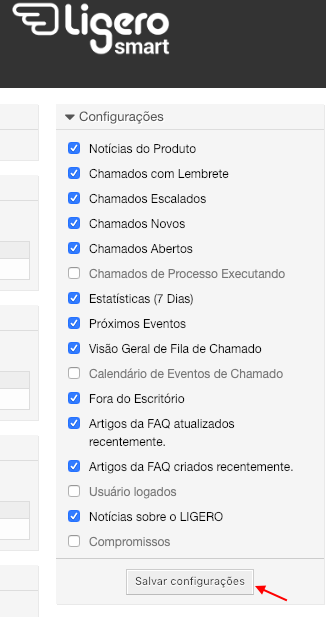

02 - Manual do Atendente
Apresentação
A seguir descrevemos uma forma de operar este sistema. Trata-se apenas de uma sugestão de uso em relação a fucionalidades. O que nós da Complemento propomos, no entanto, é que a partir da livre experimentação de uso da ferramenta, sua equipe apropie-se e crie seu próprio "jeito de usar", aproveitando assim todo o potencial criativo que sua equipe pode ter em relação ao Ligero;
Fazendo login
A interface de atendente é acessada através do link: http://IP_DO_SERVIDOR/ligero/index.pl
Através deste link, será exibida uma tela onde o atendente deverá inserir o seu login e senha e clicar no botão "login".

Conhecendo a interface de atendimento
Painel de Controle
No memonto em que o atendente realiza o login no sistema, ele verá o Painel de Controle como página inicial:

Essa é a área onde o atendente tem a visão geral dos chamados e de suas atividades. Ela é composta por várias Widgets que podem ser habilitadas ou desabilitadas através do menu "Configurações" apontado na imagem anterior.

Veremos a seguir, as widgets padrão do OTRS.
Widgets de Listagem de Chamados
Chamdos Novos: Chamados criados por e-mail ou pela interface de cliente que ainda não tiveram interação do atendente.

Chamados Abertos / Precisam ser respondidos: Chamados em andamento, ou seja, que já tiveramalgum tipo de interação do atendente.
Chamados com Lembrete: Nesta caixa aparecerá os chamados que atigirem a "data de pendência" especificada.
Chamados Escalados: Chamados que já tiveram seu prazo de solução, atualização ou resposta excedidas.
Chamados de Processos Executados: Chamados de processo em execução. Esta Widget mostra a etapa atual em que se encontra o chamado.
Podemos configurar cada uma destas caixas passando o mause em cima dabarra de título, clicando na engrenagem, e adicionando campos que acreditamos ser pertinentes para o nosso atendimento.
Widgets Adicionais
Visão geral de fila de chamado: Visualização de todos os chamados nas filas os quais o atendente tem permissão de leitura.
Próximos eventos: Um widget que informa quais são os próximos chamados que irão escalar ou atingirão seu empo de lembrete.
Calendário de eventos de chamados: Nesta caixa, é possível efetuar e visualizar o agendamento do atendimento do chamado;